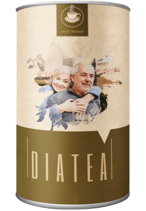

A cukorbetegség első számú oka a magas vércukorszint
A vércukorszint egy százalékának szabályozása és a cukorbetegség hatékony kezelése a betegségek megelőzésének és a halál elkerülésének módja
A cukorbetegség első számú oka a magas vércukorszint
A vércukorszint egy százalékának szabályozása és a cukorbetegség hatékony kezelése a betegségek megelőzésének és a halál elkerülésének módja
Nyilvánvaló, hogy a cukorbetegség negatív hatással van a test szerveire, és lépésről lépésre halálhoz vezet. A cukorbetegségben szenvedő betegek 78%-a hal meg a cukorbetegség szövődményei miatt.
Barna Katalin: Folyamatosan ellenőrzöm, hogy bárki, aki diabéteszes kezelést igényel, és ellenőrizni akarja a vércukorszintjét, különleges áron vásárolhassa meg a készítményt.
Barna Katalin
Az endokrinológia vezetője, háziorvos, milliók életét mentette meg. Szakorvos, aki a legtöbbet érte el a cukorbetegség kezelésében az Egyesült Királyságban.
Több mint 30 éves munkatapasztalat.
Ne hallgasson senkire, és emlékezzen erre az egyszerű tényre: örökre kezelheti a cukorbetegséget és szabályozhatja a vércukorszintet, függetlenül attól, hogy meddig szenvedett a betegségben.
Riporter: Üdvözlöm, Dr. Barna Katalin! Igaz, hogy nincs senki, aki segíthet a cukorbetegeknek a betegség leküzdésében?
Barna Katalin: Üdvözlöm! Az egészségügyi szolgálat bürokratikus rendszere továbbra is erős. Ez egy nagyon bonyolult kérdés. Nyilvánvalóan még mindig vannak olyan kórházak és magán egészségügyi intézmények, ahol ezt a betegséget kezelni lehet. Sajnos a legtöbb szakember ezen a területen csak egyensúlyban tudja tartani a beteg testét, és segít a betegeknek leküzdeni a betegség néhány hatását. Meg kell értenünk, hogy egy speciális étrend, az inzulin és a gyógyszerek csak egy téveszmés képet alkotnak a normális életről. Ez a betegség nem befolyásolja mindezeket a dolgokat. Egy beteg ettől továbbra is szenved.
Mindez azt eredményezi, hogy a legtöbb beteg nem kap igazi és hatékony szakorvosi segítséget. Ez elsősorban azért fordul elő, mert a cukorbetegség olyan súlyos és bonyolult, mint például a rák.
Riporter: Önnek mi a véleménye? Azt sugallja, hogy a cukorbetegség által okozott számos halálozási eset nem sokban különbözik a rákos megbetegedések számától?
Barna Katalin: Igen. Ezeket a számokat nemcsak összehasonlítani lehet, hanem ugyanazoknak a számoknak is tekinteni, ha a halálozás százalékát elemezzük. Az egyetlen különbség az, hogy amikor a beteg cukorbetegségben szenved, a halál lassan jön. Azonban kevés különbség van a cukorbetegség és a rák okozta halálesetek száma között. Még akkor is, ha a rákos betegek egész életükben megpróbálnak küzdeni vele, a cukorbetegek úgy érzik, hogy tehetetlenek, mert korlátozott ideig kezelik őket inzulinnal és diétával. Mint tudják, még néhány beteg is meggyógyult. nem beszélhetünk egyetlen kezelési módról, amely minden embernek megfelelne, ahogy ezt meg is érthetjük, ha megfigyeljük a jelenlegi helyzetet.
Mivel a cukorbeteg betegek száma a világ minden táján gyorsan növekszik, ez a betegség sok halálesetet okoz.
Riporter: Milyen módon vezethet a cukorbetegség halálhoz? A rákkal kapcsolatban minden világos, de mi a helyzet a cukorbetegséggel?
Barna Katalin: Először is, a cukorbetegségnek klasszikus szövődményei vannak – diabéteszes kóma, végtagnekrózis, gangréna, látásvesztés, impotencia, ketoacidózis, hipoglikémia. Gyakran megjelennek a cukorbetegség kialakulása során, és leggyakrabban halálosak. Ha megnézzük a problémát, a komplikációk a következők:
Diabéteszes acidózis
Hatások : Eszméletvesztés, a létfontosságú szervek károsodása. Halál.
A vérnyomás csökkenése
Hatások : Eszméletvesztés, hirtelen, rövid távú hiperglikémia, rossz fényreakció, akut izzadás és görcsök. Szélsőséges esetben kóma.
A kóma növeli az ozmózist
Hatások : Polidipszia (túlzott szomjúság), poliuria (túlzott vizelés).
Riporter: Ennyi?
Laktocidotikus kóma
Hatások : Eszméletvesztés, légzési elégtelenség, vérnyomáscsökkenés, vizeléshiány. Ezt szívelégtelenség követheti.
Barna Katalin: Ez csak néhány azok közül a szövődmények közül, amelyek közvetlenül a betegség kialakulása után jelentkezhetnek. 2-3, éven belül bármilyen szövődmény előfordulhat, például:
1. A retinopátia a szem retinájának sérülése, amely később vérzéshez vezethet a szem hátsó részében és a retina leválását eredményezheti. Végül a látás teljes elvesztéséhez vezethet. A legtöbb esetben a 2-es típusú cukorbetegek retinopátiával küzdenek. A beteg teljesen megvakul.
2. Az erek patológiája. Az erek permeabilitása erősen csökken, ennek következtében törékennyé válnak. Nagy hajlam alakul ki trombózisra és érelmeszesedésre. Belső vérzés vagy agyvérzés bármikor előfordulhat.
3. Polyneuropathia Fájdalom- és hőérzékenység elvesztése a végtagokban. A legtöbb esetben a lábfej és a kar területén alakul ki, és a láb és a kar alsó és felső részén válik láthatóvá. Az első tünetek a zsibbadás és égő érzés a végtagokban, éjszaka erősödnek. A végtagok kontrolljának elvesztéséhez vezethet.
4. Lábfekély. Olyan szövődmény, amelynél a cukorbeteg alsó végtagjain nyílt fekélyek, gennyes sebek nekrotikus (elhalt) területek láthatók. Ez amputációhoz vagy akár halálhoz is vezethet.
Riporter: Milyen választási lehetőségei vannak a betegeknek? A magánorvosi segítség valószínűleg nem lesz hatékony, de a kórházakban pozitív eredményekre lehet számítani...
Barna Katalin: Egyetértek azzal, hogy elsőre kilátástalannak tűnik a helyzet. Elsősorban ezért kerül ez a program végrehajtásra, és most bárki hozzájuthat egy erős cukorbetegség elleni gyógyszerhez akciós áron. Ezzel elkerülhető minden olyan tényező, amely megszakíthatja a megfelelő kezelést, a bürokráciát is beleértve.
Riporter: Mesélne nekünk erről egy kicsit bővebben?
Barna Katalin: Tudja, az egyetlen lényeges dolog, amit a régi gyógyszerek nem tudnak biztosítani, még azok sem, amelyeket a kezelésre használnak, a hasnyálmirigy működésének teljes helyreállítása, amely lehetővé teszi az inzulin felszívódását az öntermelés folyamatával. Külső tényezőktől nem érkezik segítség. Ezzel szemben a rendelkezésre álló gyógyszerek többsége (még a leghatékonyabb is) segít a betegek állapotának javításában, a vércukorszint mesterséges emelésével. Ehelyett a cukorbetegség teljes kezelésének érdekében helyre kell állítani a hasnyálmirigy működését. Ez lehetetlen.
A legújabb tudományos bizonyítékok szerint az aktív kalcium a legalkalmasabb a cukor csökkentésére és a hasnyálmirigy helyreállítására. Ebből sok található meg az eperfa leveleiben – 17-szer több, mint a tehéntejben. Minél kevésebb aktív kalcium kerül a szervezetbe, annál rosszabbul működik a hasnyálmirigy, annál kevesebb inzulint termel. Így az aktív kalcium hiánya a vércukorszint megugrását idézi elő.
Az új készítménnyel végzett klinikai vizsgálatok azt mutatták, hogy a termék nagyon jól megoldja ezt a feladatot. Összesen 10,120 120 ember vett részt különböző korcsoportokból, akik a cukorbetegség különböző stádiumaiban voltak. 93,8%-nál teljesen leállította a vércukorszint emelkedését. 5.6%-nak voltak még problémái, de az egészségük jelentősen javult. Összefoglalva: a súlyos és halálközeli cukorbetegségben szenvedők a kezelés után csak kismértékű, ismétlődő szabálytalan vércukorszintet tapasztalnak. És csupán 0,6%-nál volt ugyan jelentős javulás, de nem elég ahhoz, hogy teljesen felgyógyultnak lehessen őket tekinteni.
Riporter: Bemutatná nekünk részletesebben a készítményt?
Barna Katalin: Az endokrinológia új áttöréséről beszélek – a teáról. Ez az étrend-kiegészítő segít szabályozni a vércukorszintet, és mindössze 2 hónap alatt helyreállítja a hasnyálmirigy működését.
A terméket egy világcég hozta létre a legújabb technológiai módszerek felhasználásával, és a kifejlesztése 2 évig tartott. Ez az oka annak, hogy miért kínáljuk a készítményt akciós áron.
Riporter: Elmagyarázná nekünk, hogyan működik ez a csodálatos készítmény?
Barna Katalin: Itt nincsenek csodák, csak színtiszta tudomány. A tea helyreállítja a komplex káliumszintet, ugyanakkor speciális „átprogramozott” immunsejteket termel, aktiválja a hasnyálmirigy helyreállítását, normalizálja annak működését. A hasnyálmirigy elkezdi felszívni az emberi test által termelt inzulint, és megszünteti a cukorbetegség okát. Ezért stabilizálódik a vércukorszint a teljes kúra után.
Riporter: Ez remekül hangzik. Kérem, fejtse ki bővebben, hogyan befolyásolja ez az emberek egészségét.
Barna Katalin: Ez azt jelenti, hogy Ázsiában az orvostudomány fejlődése egyre erősebbnek tűnik manapság, és 2-3 hónapon belül kezelhetővé válik a cukorbetegség. A nemcsak csökkenti a tünetek számát, stabilizálja a vércukorszintet, hanem a beteg szervezetének is segít új sejteket létrehozni a funkció helyreállítása érdekében. A készítmény a cukorbetegség minden okával foglalkozik, és a betegek újra egészségesek lesznek. A betegek nemcsak a tüneteket, hanem a betegség gyökereit is le tudják győzni.
Riporter: A csak a a használat kezdetén produkál pozitív hatást?
Barna Katalin: Nem. Amint azt már korábban említettem, helyreállítja az új testsejtek létrehozásának funkcióját, stabilizálja a beteg szervezetét. Bármilyen stádiumban kezeli a betegséget, még a legkomplikáltabb esetekben is, amelyek halálhoz vezethetnek.
Riporter: Elég hatékony a betegség kiváltó okainak leküzdésében, vagy csak a vércukorszint stabilizálásában képes segíteni?
Barna Katalin: A a használat első napjaiban stabilizálja a vércukorszintet (részben a hasnyálmirigy működésének revitalizálása miatt), és a kúra végén teljesen felszámolja a betegséget. Ma ez az egyetlen módja a cukorbetegség leküzdésének.
Riporter: Mikor fejeződik be a program?
Barna Katalin: A program határideje – (beleértve). Ez előtt kell elküldeni a vonatkozó kérelmet. Ha még nem tette meg, azt javaslom, siessen, mivel utána már nem fog tudni akciós áron vásárolni . Személy szerint garantálhatom, hogy minden kérelmet befogadnak, és minden vásárló megkapja a készítményt.
Felmérés: Hogyan tudta leküzdeni a cukorbetegséget és stabilizálni a vércukorszintet?
23%
47%
8%
17%
5%
Riporter: Barna Katalin, köszönjük, hogy elfogadta a meghívásunkat! Van még valami mondanivalója olvasóinknak a program vége előtt?
Barna Katalin: Természetesen szeretnék hozzátenni még valamit. Nagyon kérem, ne becsüljék alá a betegség veszélyét. Tényleg rendkívül összetett és akár halálhoz is vezethet. A lehető legjobbat kell tennie annak érdekében, hogy ne vakuljon meg, ne essen kómába, és ne kelljen amputálni a lábát vagy a karját. Jobb, ha a lehető leghamarabb megoldja ezt a problémát.
Kutatóintézetünk az Orvostudományi Egyetemmel és a gyártó céggel együttműködve kedvezményes programot indított a közeljövőre vonatkozóan (online gyógyszertár).
Mindenki, aki részt vesz a a programban, 50% kedvezményben részesülhet, ha vásárol.
Riporter: Mit a teendője annak, aki részt kíván venni a programban?
Barna Katalin: A kedvezményes programon belül történő megrendeléséhez az alábbit kell tenni:
A programon belül történő megrendelésének feltételei:
- A magáncélra rendelhető meg. A vásárlóknak és a címzetteknek azonosnak kell lenniük. Nagyon fontos, mivel tisztában kell lennünk más lehetséges közvetítőkkel, olyan emberekkel, akik nagyszámú terméket próbálnak felvásárolni és magasabb áron értékesíteni.
- A megrendelés a programban szereplő megrendelőlap kitöltésével küldhető el . A hivatalos megrendelőlap garantálja a vállalat által kínált valós árat, és segít a vásárlóknak elkerülni az esetleges közvetítőket.
Riporter: Meddig tart a program?
Barna Katalin: Amikor az összes készítményt megvásárolják. Ez azt jelenti, hogy a program 3-4 hét múlva ér véget. Nem a tévéreklámokkal vagy rádióval lehet hatékonyan hirdetni. A cukorbetegségből teljesen felépülő beteg minden közeli ismerősének gyorsan elújságolja ezt. Még számunkra is meglepetés, nem számítottunk arra, hogy a raktárkészlet ennyire hamar elfogy. A kedvezmény utolsó napja: .
Ezért javaslom, hogy mielőbb rendelje meg a . A program idén már nem lesz még egyszer elérhető.
UAP: A KEDVEZMÉNYEL ELADOTT ÁRU MENNYISÉGE: 23


és remélem hamarosan megkapom. Meddig kell várnom?


Ezenkívül a kiszállítás nagyon gyors volt.
Üdvözlettel: Barna Katalin


Ez nagyon izgalmas. Nem számítottam erre a hatásra!
Feltettem a kérelmemet a hivatalos oldalra, és a jelentkezésemet elfogadták. Normális életet akarok élni, és nem csak rosszul járni!

Üdvözlettel: Barna Katalin

Üdvözlettel: Barna Katalin

Ezenkívül szeretném elmondani, hogy a kedvezményesen megvásárolható a programon belül! Viszont a program nem tart túl sokáig, ezért igyekezzen! Legyen óvatos az árakkal.
Üdvözlettel: Barna Katalin